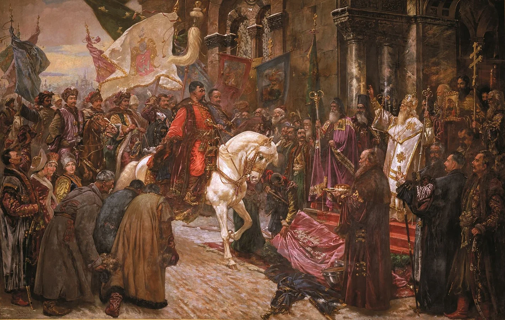
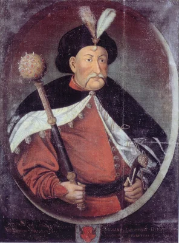

Богдан Хмельницький у фольклорі: герой, зрадник, "купець християн"
Постаті Богдана Хмельницького в українській історії випала унікальна доля: мало який лідер отримував такий широкий розголос у народній пам’яті. Протягом століть його різноманітні образи живуть в переказах, думах, піснях, прислів’ях, легендах. Образ Хмельницького саме у фольклорі набуває особливих, суто народних сенсів. На відміну від офіційних історіографічних портретів, фольклорна традиція пропонує багатошарові, часто суперечливі, проте життєві образи національного лідера, уособлення мрій, надій і розчарувань. Його називали "ясним соколом" і "батьком козацьким", йому приписували зради й чудеса, на нього покладали мрії та надії. Богдан Хмельницький увійшов у фольклор не як просто історична особа, а як символ сили, волі, перемоги й трагедії. Але ким він насправді був для простого люду — героєм, богом чи новим паном?
У народних думах і піснях Богдан Хмельницький — чи не найвідоміший персонаж, герой цілої козацької епохи. Фольклор змальовує його ватажком, що веде народ до визволення, жорстким месником за кривду, навіть містичним персонажем, здатним на надлюдські вчинки. Проте за народною уявою стоїть глибока соціальна і політична потреба: знайти вождя, який здатен навести лад у несправедливому світі. У переказах Богдан часто з’являється саме в таку мить — як реакція на страх, гнів, надію. Це добре пояснював історик Олександр Гриценко: "Хмельницький функціонує як колективне уособлення владної сили — тієї, що постає у відповідь на потребу у порядку". Перемоги Хмельницького, як-от під Жовтими Водами та Корсунем, стали основою для фольклорних наративів, де він постає безстрашним воїном, здатним мобілізувати маси. Під плином часу, різних історичних реалій та не без російського сприяння, народна пам’ять зробила Хмельницького незламним, бо він уособлює опір польському гнобленню. Для українців, які століттями потерпали від чужоземного панування, його образ став втіленням надії на незалежність. Він карав "ляхів" за знущання, об’єднув розрізнені сили і став прикладом для наступних поколінь борців за українську незалежність. Глибоке пошанування до Хмельницького як до гетьмана, лідера, мудрого і безстрашного полководця простежується у і в народних переказах, зокрема у "Герць Хмельницького", "Байка Б. Хмельницького", "Хмельницький у Запорозькій Січі", "Переказ із Брідщини" тощо. Народні перекази підкреслюють його харизму та здатність "панувати над настроями" людей, поєднуючи жорсткість з чарівністю.У фольклорних текстах Богдан Хмельницький не тільки бореться за землю й політичну автономію, а насамперед — за віру. Цей мотив особливо підсилився в контексті релігійного конфлікту після Берестейської унії